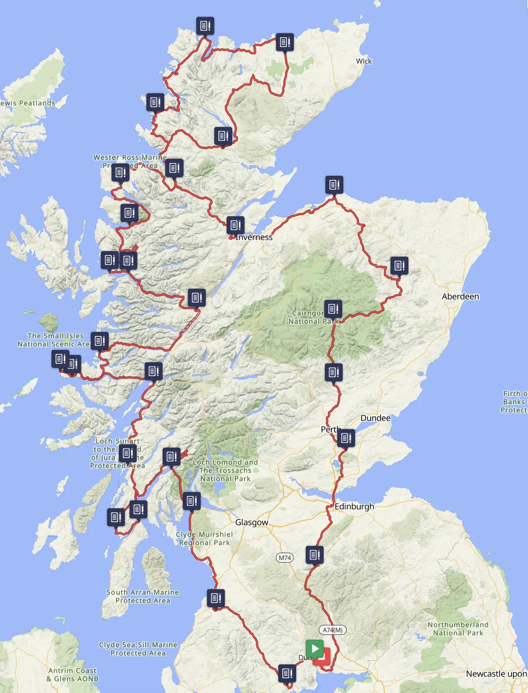

Route
- Start
- DumfriesMon 31 July 2028
- Start times
- 5–9pmwave starts
- Distance
- 2000kmsubject to final route
- Ferries
- 2Hunters Quay & Corran
Ferry crossings
There are two ferry crossings.
The first is from Gourock to Dunoon (Hunters Quay) using Western Ferries at 205km. After the evening start in
Dumfries and an overnight ride up the Ayrshire coast, you’ll get the first ferry the following morning (Tuesday).
We expect ferries to start from about 6.30am in the morning, and then a loop around Argyll.
The second ferry crossing is at Corran at 510km. The event is planned so that riders will not cross on the Corran Ferry until the Wednesday morning. If you do manage to get there and cross on the Tuesday night then you’re on your own.
After this there are no more ferries so it’s follow the route.
What the riding is like
The route takes in many stunning sections around Scotland with lots of single-track roads, fantastic views and some hills. There’s also quite a few A roads but they’re generally not busy. The majority of the route is on good tarmac roads.

The provisional draft route
2028 (DRAFT) Grand Tour of Scotland 2000km on Ride with GPS
Draft route
The route above is a draft and will change before the event. Final route sections and comprehensive event information will be sent to riders nearer the time. See GPX files.